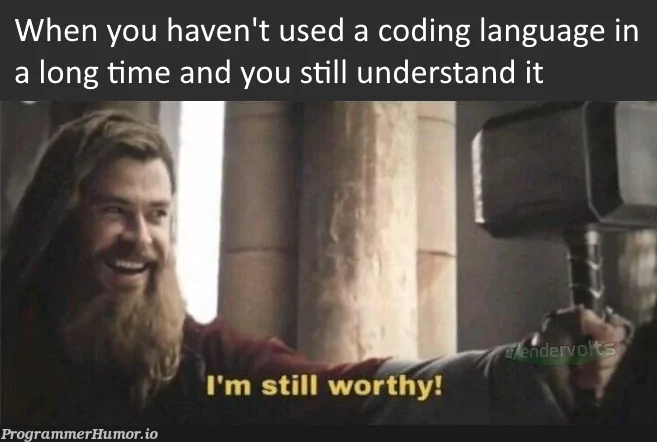
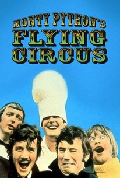
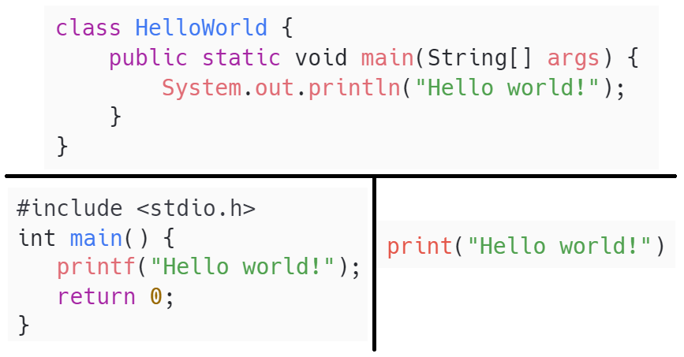
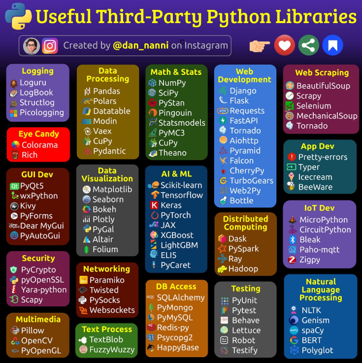

Clase 02 - Fundamentos de programación
Programación Aplicada II
2026-01-19
Fundamentos de programación
Imagen de programmerhumor.io
Algoritmo
- Un algoritmo es una secuencia finita, ordenada y definida de pasos que permiten resolver un problema específico o alcanzar un objetivo determinado.

- Debe cumplir con las siguientes propiedades:
- Finitud: debe tener un número determinado de pasos.
- Precisión: cada instrucción debe ser clara y no ambigua.
- Eficiencia: debe permitir alcanzar una solución de manera razonable en tiempo y recursos.
- Ejemplo: Una receta muy detallada de cocina
Pseudocódigo
- El pseudocódigo es una representación textual y estructurada de un algoritmo, redactada con un lenguaje intermedio entre el lenguaje natural y un lenguaje de programación formal.
- Su propósito es facilitar la construcción lógica de soluciones antes de codificarlas, sin necesidad de una sintaxis estricta.
Código fuente
- El código fuente es la implementación formal de un algoritmo utilizando un lenguaje de programación.
- Dicho código debe respetar la sintaxis del lenguaje utilizado y puede ser interpretado o compilado por una máquina para su ejecución.
Python
Python es un lenguaje de programación de alto nivel, interpretado, multiparadigma (soporta programación estructurada, orientada a objetos y funcional), diseñado para ser legible, expresivo y extensible.
Fue desarrollado en la década de 1990 por Guido Van Rossum, con el objetivo de ser fácil de aprender para principiantes y aún así poderoso para usuarios avanzados.
El nombre de Python proviene del programa de televisión favorito de Guido, “Monty Python’s Flying Circus”.

Imagen de rottentomatoes.com
Ventajas de Python

{kind=link}


- Sintaxis clara y concisa.
- Ampliamente utilizado en la industria y academia.
- Amplia comunidad y ecosistema de bibliotecas.
- Portabilidad y versatilidad en múltiples dominios: desarrollo web, inteligencia artificial, análisis de datos, automatización, etc.
En este curso se utilizará Python por su facilidad de aprendizaje y su aplicabilidad profesional.
Entorno de Trabajo
El entorno de trabajo adoptado en este curso será:
- Python 3.9+
- La distribución Anaconda
- El entorno de desarrollo Spyder, instalado en el ambiente base
En los equipos de la sala de cómputo:
- Anaconda y Spyder están instalados en el ambiente base.
- No se cuenta con privilegios administrativos para instalar Spyder en nuevos ambientes.
- Sin embargo, se requiere trabajar con ambientes virtuales separados por buenas prácticas.
Para conciliar ambos objetivos, se utilizará Spyder desde el ambiente base, pero configurado para ejecutar el código en el intérprete de un entorno virtual independiente.
Editor vs. IDE
Editor de código
Un editor de código es una herramienta de software utilizada para escribir y editar código fuente.
Funcionalidades comunes:
- Coloreado de sintaxis
- Autocompletado
- Identación automática
Ejemplos: VSCode, Sublime Text, Notepad++
Entorno de desarrollo (IDE)
Un IDE es una plataforma que unifica múltiples herramientas necesarias para el desarrollo.
Componentes comunes:
- Editor de código y consola
- Depurador (debugger)
- Explorador de archivos
- Visualizador de variables
Ejemplos: Spyder, PyCharm, Thonny
Spyder será el IDE utilizado en este curso. Está orientado a desarrollo científico y educativo, y forma parte de la distribución Anaconda.
Anaconda
Anaconda es una distribución de Python ampliamente utilizada que incluye:
- Un conjunto de bibliotecas preinstaladas.
- Entornos gráficos para desarrollo (Spyder, Jupyter).
conda, su propio gestor de paquetes.- Herramientas para crear y gestionar entornos virtuales.
¿Qué es un gestor de paquetes?
Es una herramienta que permite instalar, actualizar y administrar bibliotecas y dependencias externas al lenguaje.
Nota: Mientras Anaconda usa conda, el gestor estándar de Python es pip.
Ambiente virtual
Un ambiente virtual es una instancia aislada del intérprete de Python y sus paquetes, utilizada para gestionar proyectos de manera independiente.
¿Por qué utilizarlos?
- Evita conflictos: Impide que las actualizaciones de un proyecto rompan otro que requiere versiones anteriores.
- Reproducibilidad: Permite que otros colaboradores instalen exactamente las mismas versiones de paquetes.
- Limpieza: Facilita la instalación controlada de dependencias sin “ensuciar” la instalación global de Python en el sistema.
Important
En este curso, crearemos un ambiente específico para Programación Aplicada II para asegurar que todos trabajemos con las mismas versiones de NumPy, Pandas y Matplotlib.
Ejercicio 1. Configuración del ambiente virtual
A. Crear el ambiente virtual (se realiza una sola vez por computadora)
Desde Anaconda Prompt o la terminal, se debe ejecutar:
Y luego:
B. Instalar el componente spyder-kernels en el entorno
Este paquete permite que Spyder (instalado en otro ambiente) pueda comunicarse con el nuevo intérprete:
C. Configurar Spyder (desde el ambiente base)
Iniciar Spyder desde el menú de inicio o desde Anaconda Navigator.
Ir a:
Tools→Preferences→Python Interpreter
Seleccionar: Use the following Python interpreter
Indicar la ruta del ejecutable del entorno virtual:
- En Windows:
C:\Users\[usuario]\anaconda3\envs\curso-PA2\python.exe - En Linux/macOS:
/home/[usuario]/anaconda3/envs/curso-PA2/bin/python
- En Windows:
Aplicar cambios y reiniciar el kernel cuando sea solicitado.
Estructura de un programa

- Comentario: Texto que no afecta la ejecución. Sirve para aclaraciones.
- Sentencia: Instrucción que realiza una acción. El salto de línea (Enter) indica el fin.
- Indentación: Sangría obligatoria para definir bloques de código en lugar de llaves
{}.
- Función y llamada: Bloque reutilizable (
def) y su invocación por nombre.
- Expresión: Combinación de valores y operadores que producen un resultado (ej.
3 + 5). - Bloque: Conjunto de sentencias agrupadas por la misma indentación.
Variables y tipos de datos
Variable
Una variable es un nombre asociado a un valor almacenado en memoria.
- Python permite declarar variables sin indicar su tipo explícitamente (tipado dinámico).
- Los nombres deben ser descriptivos y no pueden iniciar con números ni contener espacios.
Tipos de datos básicos
Clasificación
Numéricos
- 🔴 int: números enteros.
- 🔵 float: punto flotante.
- 🟣 bool: lógicos (
True/False).
Mapeo
- 🔼 dict: pares clave-valor.
Secuencias
- 🟨 list: mutable y ordenada.
- 🟧 tuple: inmutable y ordenada.
- 🟫 str: texto inmutable.
Especiales
- 🔻 None: ausencia de valor.
Ejercicio 2: Tipos de variables
1. Identificación de tipos
Indica el tipo de dato de cada una de las siguientes variables:
2. Comportamiento y evidencia
- Responde las siguientes preguntas. Justifica tu respuesta mostrando la evidencia del comportamiento observado (código, resultado, explicación de lo que sucede y por qué).
- ¿Cómo imprimirías el tercer elemento de la lista
numeros? - ¿Cómo se podría modificar el contenido de la lista
numeros? - ¿Qué error aparece al intentar acceder a una clave que no existe en un diccionario?
- ¿Qué sucede si intentas sumar un número entero con una cadena?
- ¿Qué ocurre si intentas modificar una tupla después de haberla creado?
- ¿Cómo puedes comprobar si una variable contiene un valor nulo?
- ¿Cómo imprimirías el tercer elemento de la lista
Entrada de datos
Salida de datos
Conversión de tipos
Operadores
Operador
Es un símbolo especial que realiza una operación en uno o más operandos.
Tipos de Operadores
| Tipo | Operadores | Ejemplo |
|---|---|---|
| Aritméticos | +, -, *, /, //, %, ** |
a + b |
| Relacionales | ==, !=, >, <, >=, <= |
x >= 10 |
| Lógicos | and, or, not |
x > 5 and x < 20 |
| Asignación | =, +=, -=, *=, /= |
contador += 1 |
| Membresía | in, not in |
"a" in "cadena" |
| Identidad | is, is not |
x is None |
Reglas de precedencia
TIPS:
- Usa paréntesis para agrupar expresiones y evitar errores de precedencia.
- Potencia (
**) se evalúa de derecha a izquierda. - Los operadores lógicos siguen el orden:
not>and>or. - La asignación siempre ocurre al final.
| Nivel | Operador(es) | Descripción | Ejemplo |
|---|---|---|---|
| 1 (más alta) | () |
Agrupación mediante paréntesis | (5 + 3) * 2 → 16 |
| 2 | ** |
Potencia | 2 ** 3 ** 2 → 512 |
| 3 | +x, -x |
Operadores unarios | -3 + 4 → 1 |
| 4 | *, /, //, % |
Multiplicación, división, división entera, módulo | 10 % 3 → 1 |
| 5 | +, - |
Suma y resta | 10 - 4 + 2 → 8 |
| 6 | ==, !=, >, <, >=, <=, is, in |
Comparación, identidad y pertenencia | a in lista |
| 7 | not |
Negación lógica | not True → False |
| 8 | and |
Conjunción lógica | True and False → False |
| 9 | or |
Disyunción lógica | False or True → True |
| 10 (más baja) | =, +=, -=, *=, /= |
Asignación | x = 5; x += 1 → 6 |
Ejemplos de operadores
veamos algunos ejemplos…
Sin usar calculadora ni Python, ¿Cuál es el resultado de la expresión (5 + 3) * 2 / 4?
Dado el código x += 2, ¿cuál es el valor final de la variable x si su valor inicial es 7?
¿Cómo podrías verificar si un número es par utilizando operadores relacionales y aritméticos?
¿Cómo utilizarías el operador ** para calcular la raíz cuadrada de un número?
Ejercicio 3. Tipos de operadores
Supón que tienes las siguientes variables iniciales:
Responde las siguientes preguntas. Justifica tu respuesta mostrando la evidencia del comportamiento observado.
- ¿Cuál es el resultado de
a + b * 2 - 3? - Si haces
a //= 3, ¿cuál es el nuevo valor dea? - Usa el operador de potencia
**para calcular el cuadrado deb. - ¿Cuál es el resultado de
a > b and b < 5? - ¿Qué valor retorna
not (a == 10)? - Verifica si
aes múltiplo debutilizando una expresión booleana. - ¿Cómo verificarías si el número 6 está o no en
lista? - ¿Cómo saber si la clave “edad” está presente en el diccionario
persona? - Declara
c = 10y verifica sia is cy luego sia == c. ¿Por qué puede haber diferencia? - ¿Qué ocurre si ejecutas
a / 0? ¿Qué tipo de error se genera? - ¿Cómo podrías validar que una variable no es
None?
Estructuras de control
| Tipo | Estructura | Descripción | Ejemplo de uso |
|---|---|---|---|
| Condicional | if |
Evalúa una condición y ejecuta un bloque si se cumple. | if edad >= 18: |
| Condicional | if ... else |
Ejecuta un bloque si se cumple la condición, otro si no. | if edad >= 18: ... else: ... |
| Condicional | if ... elif ... else |
Permite múltiples condiciones encadenadas. | if x > 0: ... elif x < 0: ... |
| Bucle | while |
Repite un bloque mientras una condición sea verdadera. | while i < 10: |
| Bucle | for |
Itera sobre elementos de una secuencia. | for letra in palabra: |
| Control de flujo | break |
Termina un ciclo de forma anticipada. | if x == 5: break |
| Control de flujo | continue |
Omite el resto del ciclo actual. | if x == 0: continue |
| Control nulo | pass |
No hace nada; marcador de posición. | if condicion: pass |
Tips: Usa if...elif...else para condiciones excluyentes. Prefiere for para recorrer elementos y while cuando no sabes cuántas iteraciones. Evita ciclos infinitos.
Ejemplos de estructuras de control
veamos algunos ejemplos…
- Escribe un programa que solicite una calificación (0 a 100) y muestre:
- “Excelente” si es ≥ 90
- “Bueno” si es ≥ 70
- “Suficiente” si es ≥ 60
- “Reprobado” en caso contrario
- Escribe un programa que declare una lista de nombres y salude a cada uno.
- Solicita al usuario contraseñas hasta que escriba “python”.
Funciones
Función
- Una función es un bloque de código reutilizable que realiza una tarea específica.
- Permite dividir un programa en partes más pequeñas, legibles y mantenibles.
Una función encapsula una acción o un conjunto de instrucciones que pueden ejecutarse varias veces sin reescribir el código.
¿Por qué usar funciones?
- Evitan la repetición de código (DRY: Don’t Repeat Yourself).
- Mejoran la organización del programa.
- Permiten dividir problemas complejos en partes más manejables.
- Facilitan las pruebas y el mantenimiento.
Sintaxis de funciones
Ejemplo:
Funciones con retorno (return)
Buenas prácticas al definir funciones
- Usa nombres descriptivos en minúsculas y con guiones bajos (
snake_case). - Incluye una docstring que explique qué hace la función.
- Limita la función a una sola responsabilidad.
- Evita efectos secundarios innecesarios (modificar variables externas).
- Usa
returnpara valores que necesites reutilizar.
| Tipo | Descripción | Ejemplo |
|---|---|---|
| Sin parámetros, sin retorno | Ejecuta acciones, pero no recibe ni devuelve valores | def bienvenida(): |
| Con parámetros | Recibe datos para trabajar con ellos | def saludar(nombre): |
| Con retorno | Devuelve un valor con return |
def suma(a, b): return a + b |
| Parámetros por defecto | Asignan valores si no se proporcionan argumentos | def saludar(nombre="invitado"): |
¿Qué es un parámetro? ¿Qué es un argumento?
Parámetro: variable declarada en la definición de la función.
Argumento: valor real que se pasa cuando se llama a la función.
Ejemplo:
Ejercicio 4. Estructuras de control y funciones
Para cada uno de los siguientes problemas, realiza lo siguiente:
- Diseña el algoritmo o pseudocódigo que describa paso a paso la solución.
- Escribe el código usando funciones y estructuras de control. Recuerda que el código debe ser eficiente y organizado.
- Responde las preguntas específicas de reflexión que se indican.
Ejercicio 4.1 Dos gatos y un ratón
Dos gatos y un ratón se encuentran en varias posiciones sobre una línea.
- Como valor de entrada, solicita al usuario sus posiciones iniciales.
- Tu tarea es determinar cuál gato alcanzará al ratón primero, asumiendo que el ratón no se mueve y ambos gatos se mueven a la misma velocidad.
- OJO: Si ambos gatos llegan al mismo tiempo, el ratón podrá escapar mientras que los dos gatos pelean.
Entrada: Solicita como valores de entrada tres enteros, los cuales representan respectivamente las posiciones del gato A, del gato B y del ratón C. Puedes suponer que 1≤A, B, C≤100.
Salida:
- Si el gato A alcanza primero al ratón, imprime como salida “gato A”.
- Si el gato B alcanza primero al ratón, imprime como salida “gato B”.
- Si ambos gatos alcanzan al ratón C al mismo tiempo, imprimir como salida “raton C”.
Ejemplos:
| Entrada | Salida |
|---|---|
| 1 2 3 | gato B |
| 1 3 2 | raton C |
| 4 8 10 | gato B |
| 8 3 12 | gato A |
Ejercicio 4.2 Una sumatoria muy extraña
Escribe un programa que evalúe el valor de \(\sum_{i=m}^{n}\) donde:
\[ \begin{eqnarray} m &=& \sum_{i=1}^{a} i \\ n &=& \sum_{i=1}^{b} i \end{eqnarray} \]
Entrada: Solicita como valores de entrada dos enteros a y b. Puedes suponer que 1≤a≤b≤100
Salida: Un entero que sea el valor de la fórmula evaluada.
Ejemplo:
| Entrada | Salida |
|---|---|
| 3 5 | 105 |
Ejercicio 4.3 Una serie poco interesante
La serie numérica 1,2,3,1,2,3,1… es infinita pero no por eso deja de ser bastante aburrida.
Por ejemplo, es fácil darnos cuenta que después de un 1 siempre sigue un 2 y que antes de un 1 siempre hay un 3.
Si N es el número actual de la serie, ¿podrás adivinar qué números están P posiciones antes y después de N?
Entrada: Solicita como valores de entrada dos enteros N y P. Puedes suponer que 1≤N≤3 y 0≤P≤10⁹.
Salida: Dos enteros separados por un espacio donde el primero sea el número que está P posiciones antes de N y el segundo el que está P posiciones después.
Ejemplo:
| Entrada | Salida |
|---|---|
| 2 1 | 1 3 |
| 2 0 | 2 2 |
| 1 2 | 2 3 |
Referencias
Arora, Pretti. Computer Science with Python. (2020). Computer Science with Python
Stanford University. Stanford CS224N Python Review. Stanford CS224N Python Review
Ejercicio 1: Dos gatos y un ratón
Dos gatos y un ratón
Ejercicio 2: Una sumatoria muy extraña
Una sumatoria muy extraña
Ejercicio 3: Una serie poco interesante
Una serie poco interesante